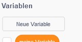
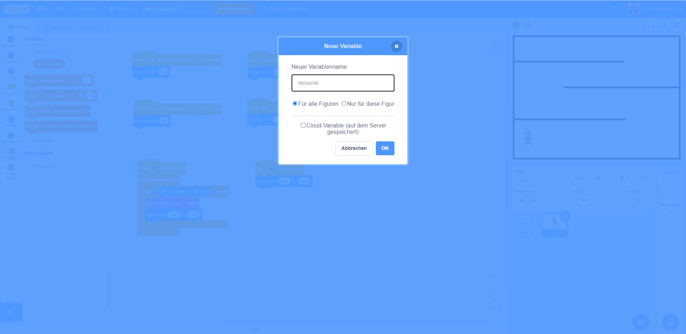
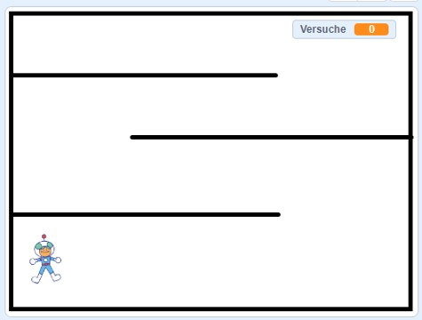
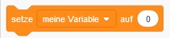
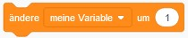
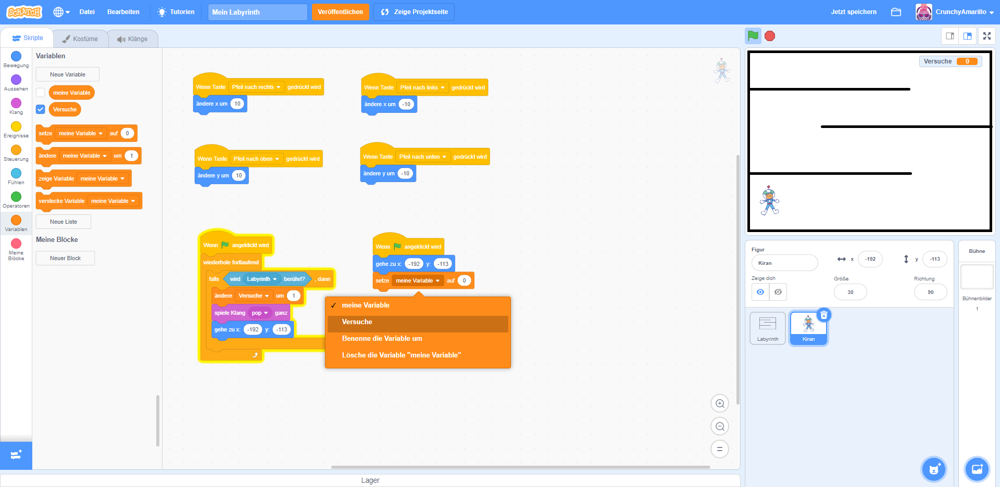

Strafpunkte verteilen
In diesem Schritt erweitern wir dein Spiel um Strafpunkte. Diese werden hochgezählt, sobald deine Figur die Wand deines Labyrinths berührt.
1. Variable erstellen
Die Strafpunkt sind etwas, was sich dein Programm merken muss. Dafür benötigen wir einen
Speicherplatz im Programm. Du kannst dir das in etwas so
vorstellen, wie einen Speicherplatz in deinem Gehirn. Du hast da zum Beispiel eine Stelle im Gehirn,
die sich merkt, wie alt du bist.
Und jedes Jahr, wenn du ein Jahr älter bist, dann merkt sich dein Gehirn das. Und immer wenn dich
jemand fragt, wie alt du bist, dann kannst du direkt eine Antwort geben.
Einen solchen Speicherplatz in unserem Programm bezeichnen wir als Variable. Öffne deshalb jetzt die
Programmblock-Gruppe "Variablen" und klicke dort auf die Schaltfläche Neue Variable.

Es öffnet sich nun ein neues Fenster in dem du eine neue Variable anlegen kannst. Gib dieser Variable einen Namen, z.B. "Strafpunkte" oder wie in meinem Fall "Versuche". Wähle außerdem die Einstellung "Für alle Figuren" aus. Erstelle nun die neue Variable in dem du die "OK"-Schaltfläche anklickst. 
2. Variable positionieren
Deine neue Variable wird dir nun im Vorschaufenster angezeigt. Sie hat am Anfang einen Wert von 0. Das heißt, deine Figur hat bisher noch keine Strafpunkte erhalten. Du kannst die Variable im Vorschaufenster anklicken, wenn du dann die linke Maustaste gedrückt hälst, hast du die Möglichkeit die Variable an einen beliebigen anderen Ort zu verschieben. Positioniere die Variable so nach deinen Vorstellungen. 
3. Programmcode anpassen
Nun müssen wir nur noch den Programmcode anpassen und dabei zwei Dinge tun:
- Zu Beginn des Programms den Wert der Strafpunkte immer wieder auf 0 sezten
- Immer wenn deine Figur die Wand berührt, die Strafpunkte hochzählen
Nutze dafür die beiden Blöcke zum Setzen und Ändern einer Variable aus der Blockgruppe "Variablen":


Der fertige Programmcode sollte dann so aussehen, wie in diesem Bild: 
Achte darauf, dass deine Programmblöcke die richtige Variable verwenden. Ändere dafür die Einstellung "meine Variable" an den jeweiligen Blöcken auf den tatsächlichen Namen deiner Variable.
4. Ausprobieren
Jetzt ist es wieder an der Zeit deinen Programmcode zu testen. Aktiviere den Vollbildmodus im
Vorschaufenster  .
Stoppe zunächst dein Programm, falls dieses noch läuft über die Schaltfläche
.
Stoppe zunächst dein Programm, falls dieses noch läuft über die Schaltfläche  . Starte das Programm
anschließend neu.
. Starte das Programm
anschließend neu.